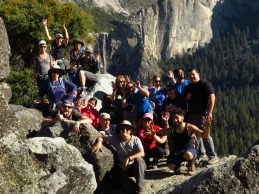
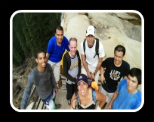
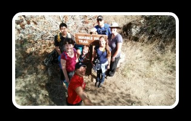

| My Adventures with my Meetup groups | |
|---|---|
|  | |
| The Hike to Rock Slide Falls and and Rainbow Point | The mission is simple, climb over the big boulders that had once dwelled in side cliffs of the sleeping giants of Yosemite. El Captain overlooks those who dare try the lost trail to lookout point called Rainbow view. Yosemite tries to hide the secrets but we dare to uncover them. We park are cars under the tall sequoias. We are excited that our journey is about to begin. We are a group comprised of friends and families and we all share a same interest of adventure. We climb over boulders and hike through the switch back of trails, with one goal on our mind; Rainbow View. We find the second part of the trail is covered with the boulders from a rockslide and half way up is a wall made by man. We are told to climb up to the wall and turn left to find the trail. Full of excitement I take lead, here I go. My heart is racing with excitement as we climb. I feel like an explore leading an expedition. |
|  | |
| The Hike to Little Yoseimte Valley | Time once again to escape the city and share the beauty of Yosemite with new people. I want them to see what I see on the trails. I take them along the famous waterfalls Vernal falls and Nevada Falls. For the first time they encounter steps after steps which I call stair way to hell. Finally they see the fruits of their labor and can see the rail that leads them along the water fall. We have reached the Mist trail. The excitement has return to their face as they hike up. We get to the top and get to see the full glory of the Vernal Waterfall. I am proud of my group and see they are ready to continue on. We hike past the Emerald pool and continue the switchbacks of trails to the next waterfall Nevada Falls. We reach our destination on top and now for on last break before the final push to our spot. We are heading to Little Yosemite Valley to a beach spot on the river. |
|  |